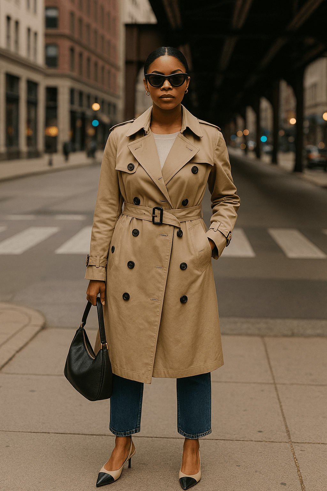

Windy City Looks: The Unexpected Style Power of Chicago
Chicago’s fashion scene is often overlooked in favor of flashier style capitals like New York or Los Angeles. But those in the know understand: the Windy City is where grit meets sophistication. It’s where streetwear blends with jazz-age elegance, and where clothing isn’t just an outfit — it’s armor, attitude, and identity in motion. In 2025, Chicago’s visual culture is booming, and it’s reshaping how we define American urban style.
Wicker Park: The Heartbeat of Streetwear
Wicker Park isn’t trying to be Brooklyn. It’s busier, bolder, and more rooted in local expression. The streets are lined with vintage stores like Kokorokoko and Ragstock, where Gen Z creatives mix ‘90s sportswear with thrifted Levi’s, patchwork jackets, and handmade accessories. You’ll spot graffiti artists in cargo pants and puffer vests, designers in dirty Converse and oversized bombers — and none of it feels like costume. It’s Chicago’s answer to authenticity.
“In Wicker Park, fashion is less about brands and more about how you wear the past.”
The area’s influence is being noticed by fashion editors worldwide. Stylists are flying in for inspiration. Local brands like Leaders 1354 and Fat Tiger Workshop are making waves in the streetwear circuit, collaborating with global giants but keeping their roots hyperlocal. The result? A look that’s layered, confident, and impossible to fake.
Downtown: Elegance Meets Modernity
Loop life is sleek. In the heart of the city, Chicagoans dress like they own the skyline. Think sharp silhouettes, neutral palettes, and investment pieces that scream taste without needing to shout. Camel coats glide over wide-leg trousers, crisp button-downs layer under tailored blazers, and boots hit pavement like punctuation marks. This isn’t Wall Street power dressing — it’s Midwestern clarity, elevated.
"Downtown style isn’t minimalism — it’s measured confidence."
Architectural details inspire many outfits here. The Sears Tower, the Art Deco lines of the Carbide & Carbon building — fashion reflects form. Accessories stay close to the body: leather crossbodies, structured sunglasses, gloves in fine cashmere. Men favor trench coats and tapered chinos; women, sculptural coats and platform ankle boots. Everyone carries themselves like they’re in a Saul Leiter photograph — understated but striking.
Hyde Park: Cultural Richness in Style
Hyde Park is soul. It’s intellectual, it’s radical, and it dresses like it. With the University of Chicago at its core and a legacy of Black cultural leadership, the neighborhood is where fashion meets history and heritage. You’ll see Ankara prints next to leather biker jackets, berets over graphic tees that quote Audre Lorde, and trench coats layered with ancestral fabrics. It’s eclectic, expressive, and political in all the right ways.
“In Hyde Park, your outfit is your manifesto.”
There’s an undeniable energy in the way people mix thrifted pieces with family heirlooms or blend South Side swagger with Ivy League preppy. Bookstores double as fashion backdrops. Cafés host poetry nights and runway rehearsals. There’s an intersection of academia and activism that informs how people dress — proud, poetic, and entirely original.
Chicago’s Fashion Identity in 2025
The city’s fashion identity is no longer hidden behind coasts. It's rising in global conversations about how to style for resilience, how to layer meaning into clothing, and how to express power through detail, not volume. Chicago is influencing global design — from music videos filmed in West Loop warehouses to editorials shot in Bronzeville alleyways.
Designers like Sheila Rashid are redefining American tailoring. Local photographers are shooting for international campaigns. The city’s annual fashion incubators are now springboards for global relevance. And on the street? It’s never been more visually exciting to just people-watch in Pilsen, Uptown, or Logan Square.
“Chicago isn’t chasing trends — it’s building legacies.”
Style Essentials in the Windy City
- Oversized outerwear (puffers, trench coats, wool overcoats)
- Chunky sneakers and weather-proof boots
- Layered neutrals with pops of statement color
- Heritage prints, cultural symbols, local-brand graphics
- Structured bags that blend form and function
- Texture play: leather, denim, knit, and velvet in one look
In 2025, Chicago is more than a fashion city — it’s a statement. It’s proof that elegance and edge can coexist. That local culture matters. And that real style doesn’t just follow seasons — it survives them.